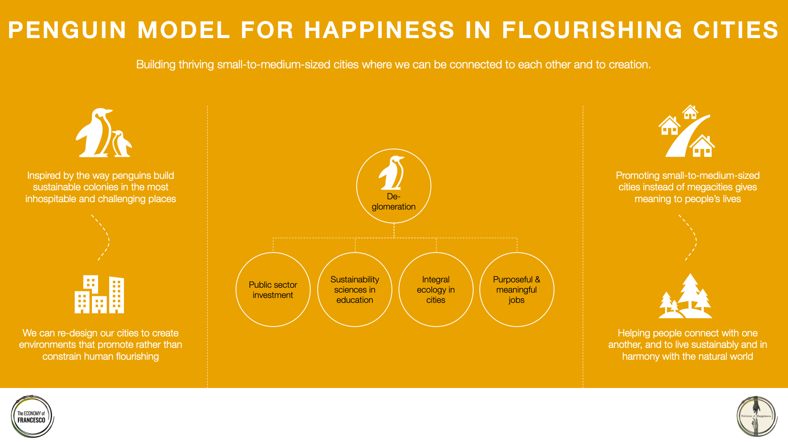
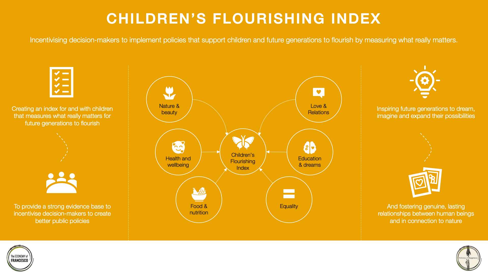
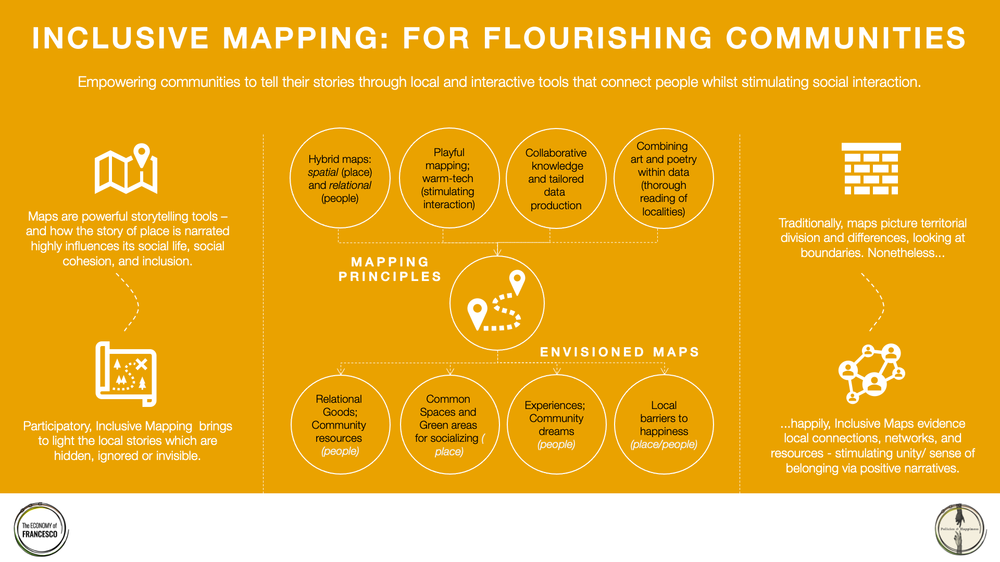

Welcome to the Policies & Happiness Village of the Economy of Francesco.
The following are our three most prophetic proposals for a flourishing new global economy: Our Common Future: The Penguin Model for Happiness in Flourishing Cities; Inclusive Mapping (For Flourishing Communities); and Children's Flourishing Index submitted to the Economy of Francesco Organizing Committee in October 2020.
The following three infographics summarise our three proposals:



We presented our three proposals at the Economy of Francesco international event on 19 November 2020. You can watch it on YouTube in English, with translations into: Italiano, Português, Español, and Français.
Policies and Happiness Village
Economy of Francesco
2020